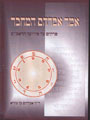
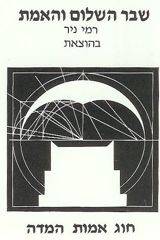
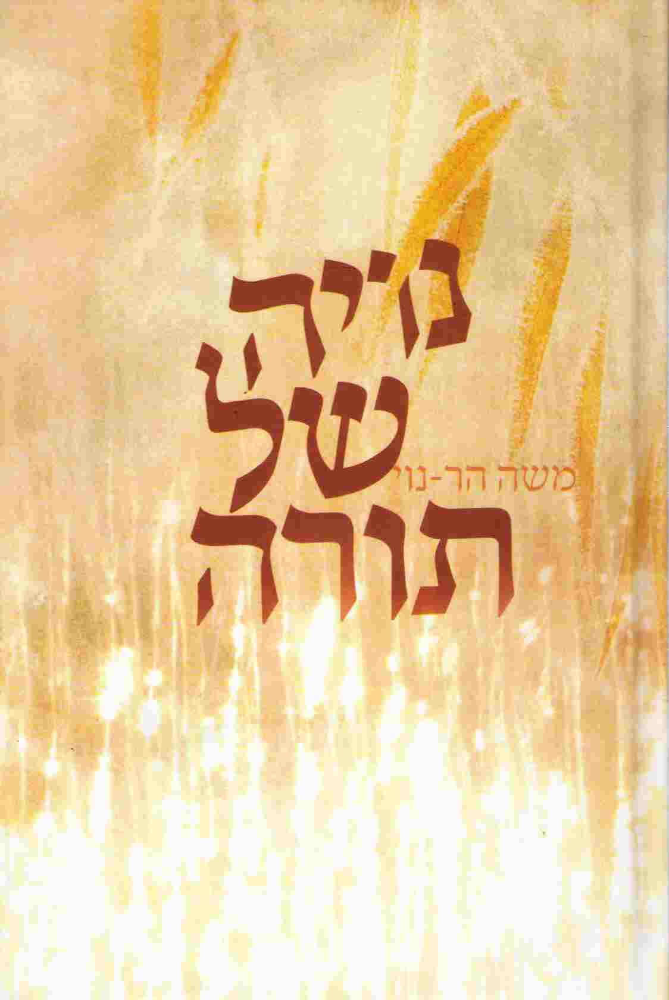

ראשי>
ספרים בנושאים תנ"כיים, של סופרים בני דורנו
קוד: סופרים בני דורנו בתנ"ך
סוג: אוסף
מאת:
אל:
- אהרן אמוזג
- ברוריה בן-דוד (וייס) - ספרי עזר למורים לתנ"ך
- הרב אילן חיים פור, מורשת
- הרב אליהו מאלי - אורות מציון
- הרב לוי סודרי - שירים וסרטונים לבקיאות בתנ"ך / אראל
- חגי הופר
- ד"ר מנחם צוקר

- הרב אברהם קורמן

- אורנה ליברמן
- אלברט שבות
- קובי מרוז
- ד"ר אברהם בן עזרא
- רפאל ב"ר אשר חגבי - חגי רפי
- עמנואל וליקובסקי - תקופות בתוהו / עמנואל וליקובסקי -> אתר דעת (קישור חיצוני)
- רמי ניר - שבר השלום והאמת
- שלומית אגוזי - תנ"ך בראיה הומניסטית-חילונית
- הרב משה הר נוי - "נויה של תורה"
- הרב דב בעריש רוזנברג - "הפוך בה"

- פרופסור יצחק פריד - פרוייקט האטימולוגיה העברית
 (קישור חיצוני)
(קישור חיצוני) - אבנר רמו
- דין משה ותורתו (.doc) / מורה לתורה משה דין
- בריאה כצריפה / אורנה ליברמן [׳ ׳›׳×׳‘ ׳‘-11:58:25 05.01.2016]
- ערגה לברכת הצריפה / אורנה ליברמן [׳ ׳›׳×׳‘ ׳‘-11:32:44 26.01.2016]
- The Molten Sea / אבנר רמו [written22:09:27 09.02.2016]
- היכל / אבנר רמו [׳ ׳›׳×׳‘ ׳‘-22:25:31 09.02.2016]
- תגובה על Molten Sea / אבנר רמו [׳ ׳›׳×׳‘ ׳‘-00:01:53 10.02.2016]
- קובץ מסוג אחר על: ספרים בנושאים תנכיים, של סופרים בני דורנו / אבנר רמו [׳ ׳›׳×׳‘ ׳‘-05:32:43 11.06.2016]
- קובץ מסוג אחר על: ספרים בנושאים תנכיים, של סופרים בני דורנו / אבנר רמו [written05:31:57 11.07.2016]
- צמא במדבר / אבנר רמו -> צמא במדבר
- הערות קרי-כתיב לספר ירמיהו / אבנר רמו -> הערות קרי-כתיב לספר ירמיהו
- Heaven's bread / אבנר רמו -> לחם שמים Heaven's bread
- הר המוריה Mount Moriah / אבנר רמו -> הר המוריה Mount Moriah
- מה"אזור" התנכי ל"סינר" התלמודי / אבנר רמו -> מה"אזור" התנכי ל"סינר" התלמודי
- ?A sheep or a ramp / אבנר רמו -> ?A sheep or a ramp [written23:05:49 05.09.2016]
- Child or a lad / אבנר רמו -> A child or a lad [׳ ׳›׳×׳‘ ׳‘-00:05:29 06.09.2016]